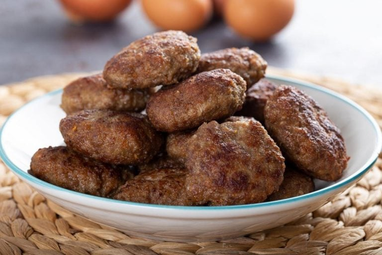

קציצות בשר מטוגנות
מצרכים:
- 1/2 קילו בשר טחון
- 1 בצל גדול – מגורר בפומפייה, סחוט היטב מנוזלים
- 3 כפות פירורי לחם / קמח מצה לקציצות לפסח
- 1 ביצה
- 1/2 צרור פטרוזיליה – קצוצה
- 2 שיני שום – כתושות
- 1/2 כפית מלח
- 1/4 כפית פלפל שחור
- 1/2 כפית פפריקה אדומה מתוקה או חריפה
- 1 כפית שמן
- שמן לטיגון הקציצות

הוראות הכנה:
- בקערה גדולה מערבבים את כל מצרכי הקציצות לתערובת אחידה. מכסים ומעבירים למקרר ל-15 דקות.
- מחממים שמן חצי עמוק במחבת רחבה וגדולה.
- ליצירת קציצות מושלמת יש להכין מתערובת הבשר כדור קטן ולאחר מכן להדק אותו בין כפות הידיים לצורת קציצה,
לסיום
יש לסגור היטב את הפתחים שנוצרו בקצוות הקציצה.
- מטגנים את הקציצות בשמן החם עד שהן משחימות היטב מכל צד. מוציאים לנייר סופג ומגישים חם חם!
בתיאבון!
קרדיט לאתר:
Food is good